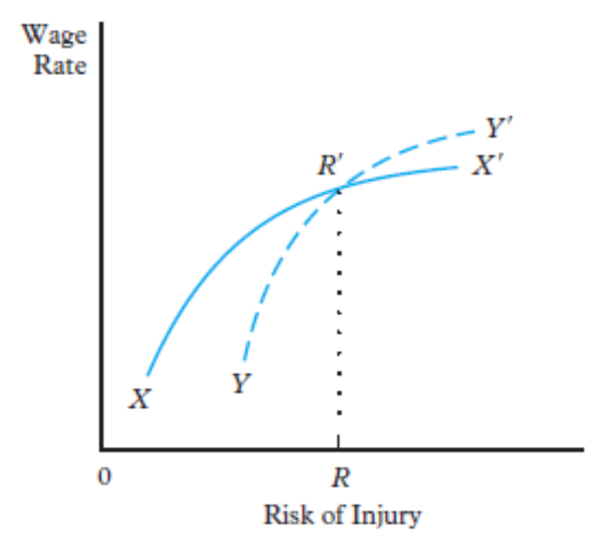
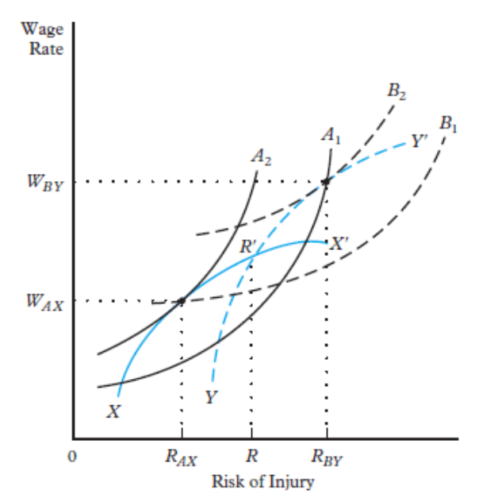
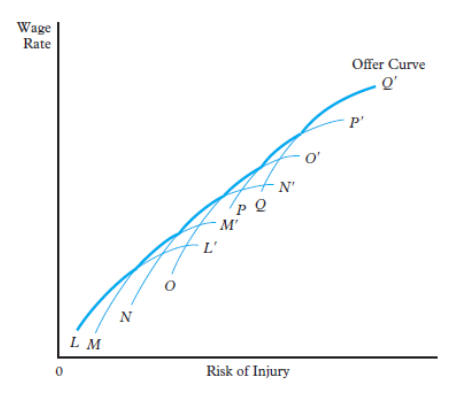
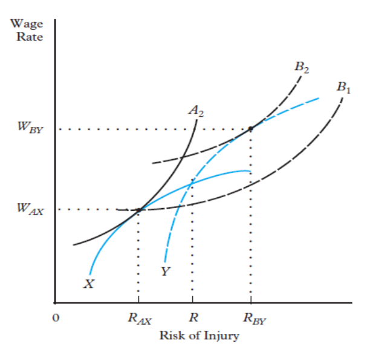
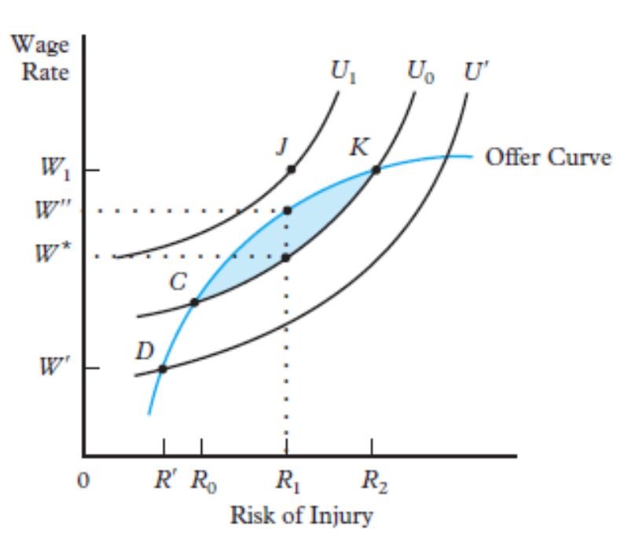

6. Compensating Wage Differentials
🤔 Which job workers choose? Why are some jobs paid more?
In previous lessons, we often assumed workers and jobs were somewhat "homogeneous." In reality, the labour market is highly diverse. Understanding Compensating Wage Differentials (or Equalizing Differences) helps explain why two workers with identical skills might earn very different wages purely based on their job's characteristics.
1. Workers: Skills & Preferences
Workers are heterogeneous. They don’t value jobs the same way because of:
- Differences in Human Capital: Workers are not identical "units" of labor. Each person brings a unique baggage of inherited traits, formal education, and on-the-job experience. These differences in skills determine their productivity ceiling, but also their potential wage floor.
- Diversity of Personal Preferences: Beyond money, workers have subjective evaluations of job "utility." Some might prioritize flexible hours for family reasons, while others seek the prestige of a high-pressure corporate environment. This means that a "good job" is defined differently by every individual.
2. Employers: Requirements & Environment
Jobs are also heterogeneous on the supply side:
- Skill and Productivity Requirements: Not every firm can hire any worker. Some roles require rare, highly-specialized skills that are scarce in the market (like neurosurgery or quantum computing). This scarcity, combined with the firm's need for high productivity, naturally puts upward pressure on wages.
- Environmental Variations: Jobs vary wildly in their "disutility." Some platforms offer air-conditioned offices, while others require working in extreme heat, noise, or high-risk construction sites. These conditions are "costs" borne by the worker during their shift.
🧠 How the Compensating Differential Emerges
Workers maximize utility (not just wage!) — they are interested in both the pecuniary and the nonpecuniary aspects of their jobs. Let's see step-by-step how the market creates the wage differential.
Step-by-Step: Finding the Equilibrium Wage Differential
150 CZK/hour
Doesn't need to increase wage
150 CZK/hour
150 is NOT an equilibrium wage
At 150 vs 150: Workers with the same skills seek for a job → all prefer Firm 1 (same pay, better conditions). 150 CZK is NOT an equilibrium wage for Firm 2 — it cannot attract anyone.
Firm 2's Options: Either (a) clean up the place and make it safe (costly), or (b) pay a higher wage $w$ (or both). Suppose Firm 2 keeps bad conditions and raises wage to 200 CZK/hour. Compensating wage differential = 50 CZK/hour.
At 150 vs 200: If ALL workers switch to Firm 2 for the higher wage, then the 50 CZK differential is too high — Firm 1 loses everyone, Firm 2 can afford to ↓w. So 50 CZK is not necessarily an equilibrium differential.
More likely: Some workers are sensitive to conditions → stay at Firm 1. Others accept conditions for the wage differential → go to Firm 2. If both firms obtain the quantity of workers they wanted, then we have found the equilibrium compensating differential.
How to Recruit Labour for Nasty Jobs?
A number of jobs are unavoidably nasty or would be very costly to make safe and pleasant. Society has only two ways to recruit workers for such positions:
Compulsory military service, prison labour, or wartime conscription. The state forces people into unpleasant roles regardless of their preferences.
In a free market, the mechanism is the compensating wage differential: make incentives for people to do the jobs voluntarily by offering higher pay.
📜 Adam Smith's 5 Pillars of Inequality (1776)
In The Wealth of Nations, Smith identified five specific circumstances where wages must vary to "equalize" the total net advantage of jobs:
⚖️ Theory of Equalizing Differences
The Theory of Compensating Wage Differentials (Equalizing Differences) predicts that wage differences across jobs reflect compensation for undesirable job characteristics.
1. The "All Else Equal" Assumption (Homogeneous Workers)
To truly isolate the effect of job characteristics, we must imagine that workers are identical in their skills, productivity, and resumes. This allows us to say: "The only reason Jean earns 20% more than Pierre is because Jean's job is more dangerous." If workers had different skills, the wage gap would be contaminated by returns to human capital.
2. The Pursuit of Utility (Not just Wealth)
We assume workers are rational utility-maximizers. They don't just look at the figure on their paycheck; they evaluate the "net advantage" of a job. If a job pays well but destroys their health or mental well-being, their total utility might be lower than in a lower-paying but pleasant job. This trade-off is the engine of the model.
3. The Transparency of Risk (Perfect Information)
For the market to price "danger" or "unpleasantness" correctly, workers must know what they are getting into. They must understand the probability of an accident or the long-term health impact of a toxic environment. If information is hidden, the compensating differential will be too low, leading to market failure.
4. Freedom of Movement (Worker Mobility)
Compensation only happens because workers have options. If Firm B is dirty and Firm A is clean, Firm B must pay more because otherwise, its workers would simply walk across the street to Firm A. Mobility creates the competitive pressure that forces firms to "pay for their sins" (bad conditions).
Empirical Tests for Compensating Wage Differentials
Difficulties in Estimating CWD
- Data requirements: We need all relevant job characteristics AND personal characteristics that also influence wages (education, experience, age, race, gender, region, etc.). Without controlling for all of these, we cannot isolate the CWD.
- Specification of "bad" characteristics: We must be able to specify in advance which job characteristics are generally regarded as disagreeable. What is "bad" can be subjective.
🛡️ Compensating Wage Differentials Theory and the Risk of Injury
Assume that compensating differentials for every other job characteristic have already been established. We focus on the risk of injury as the single remaining "bad" characteristic, and analyze both the worker's and the firm's perspective.
1. The Employee's Perspective: Indifference Curves

Properties of worker indifference curves:
- Upward Sloping: Risk of injury is a "bad" characteristic — if risk increases, the wage must increase to keep utility constant.
- Convex: Increasing marginal compensation for risk — as the job becomes more dangerous, the worker requires progressively larger wage increases to accept one more unit of risk.
- Direction of Utility: Utility increases as we move Up (Higher Wage) and Left (Lower Risk).
2. Sorting Based on Preferences

Not all workers view risk the same way. The market performing a sorting function, matching people to the jobs that best fit their personal psychology:
- Person A (High Risk-Aversion): They have a very steep indifference curve. For them, even a tiny increase in risk feels like a massive loss of utility, so they demand a huge wage hike to compensate. Naturally, they settle in safe jobs where they "pay" for safety through a lower wage, which is a trade-off they are happy to make.
- Person B (Low Risk-Aversion): Their curve is much flatter. They are more "indifferent" to danger; it doesn't bother them as much. Because they don't demand a massive premium for risk, they are the ones who fill the dangerous positions in the economy (like high-rise construction or deep-sea fishing), earning a higher wage in the process.
💼 Employer's Side: The Cost of Safety
Just as workers have different preferences for risk, firms have different cost structures. The employer's perspective relies on three key assumptions:
The 3 Assumptions About Employers
- Reducing the risk of injury is costly: Safety programs, protective equipment, and facility upgrades all cost money.
- Perfect competition: Firms operate at zero profit in the long run. They cannot absorb extra safety costs without reducing wages.
- Ceteris paribus: All other job characteristics are presumably given or already determined. We only analyze the wage-risk trade-off.
Implication: If a firm undertakes a program to reduce the risk of injury, it must reduce wages to remain competitive → This creates the isoprofit curves.
Employer's Isoprofit (Same Level of Profit) Curves
- Upward sloping: Wage/risk trade-off — if a firm spends more on safety (lower risk), it must spend less on wages to maintain profit.
- Concave: Diminishing marginal returns to safety expenditures — the first safety measures are cheap, but making a very risky job "almost safe" is extremely expensive.

Employers differ in how costly it is for them to reduce the risk.
Firm X: Low Safety Costs
Uses modern technology. The isoprofit curve is flatter — a small reduction in wages buys a large reduction in risk.
Firm Y: High Safety Costs
Older facilities, inherently dangerous processes. The isoprofit curve is steeper — it is extremely costly to reduce risk, so wages must drop steeply to maintain profit.
🤝 The Matching of Workers & Firms
The labour market efficiently pairs workers with firms. Risk-averse workers "buy" safety from firms that can provide it cheaply.

The Matches:
- (Worker A + Firm X): High risk aversion + Low safety costs. Results in a **Safe Job** with a lower wage.
- (Worker B + Firm Y): Low risk aversion + High safety costs. Results in a **Risky Job** with a higher wage.
The Hedonic Wage Function (Offer Curve)

The Offer Curve: By connecting all equilibrium points (L, M, N, O, P) from multiple worker-firm matches, we create the market's "Price List" for risk.
- Upward Sloping: More risk always implies a higher market wage.
- Market Map: It summarizes all voluntary wage-risk trade-offs available in the economy.
🇨🇿 Statistics of Workplace Injuries in Czechia
Before studying the normative question of regulation, let's look at the empirical reality of workplace injuries in the Czech Republic (Source: Pracovní úrazovost v ČR, bozpinfo.cz).
What were workers doing when they got injured?
The leading cause by far is handling physical objects — things like lifting, carrying, and manipulating loads. This alone accounts for 41% of all accidents in 2024.
📌 Together, the top 3 activities cover nearly 65% of all injuries. The risks are concentrated in a few basic physical tasks — not exotic or extreme situations.
Where do injuries happen?
Production and operational areas are the most dangerous places, responsible for 33% of injuries. This confirms that manufacturing and industrial floors are the highest-risk environments in the Czech economy.
📌 The top 3 locations alone cover ~48%. Clearly, it's the factory floor — not offices or streets — where most workers face physical risk.
What caused the injury?
Materials, machine parts, and loads are the #1 source of injury (32%), followed closely by floors, stairs, and surfaces (28%). These two alone account for 60% of all injuries.
📌 A worker slipping on a wet factory floor or being hit by a moving part is far more common than dramatic explosions or machinery failures.
💡 Economic Link: These data support the CWD theory — the most at-risk workers (factory, logistics, manual handling) are precisely those expected to earn compensating wage differentials. The 2018 spike (methane explosion in Karviná mine) also illustrates that certain sectors carry extreme tail risks, requiring very large compensating premiums.
⚖️ Normative Analysis: Safety and Health Risk Regulation
Questions: Is there a need for regulation of workplace safety and, if needed, what should the goals of the regulation be? This depends on the validity of the assumptions: Are the workers aware of all potential risks? Did they choose the job voluntarily (are they mobile)?
1. Regulation When Workers Are Informed and Mobile

Reducing risk to a certain maximum level is socially desirable (normative statement), but can reduce utility of some workers.
If the government sets a maximum legal risk level at $R_{AX}$:
- Worker B's utility drops: Worker B was knowingly at a high-risk, high-wage job ($B_0$). Regulation forces him to move to $B_1$ on a lower indifference curve → reduced utility.
- Firm Y shuts down: Firm Y cannot afford to make its operations safe enough → it has to close down.
- But Worker A benefits IF he had no choice: If worker A didn't have any other choice than to accept the same job as B (where he would be at a lower indifference curve), the regulation would actually make him better off.
2. Regulation When Workers Are Uninformed or Immobile
If workers are uninformed and unable to comprehend different risk levels, or if they are immobile, they might not have chosen the level of risk voluntarily — government regulation could make workers better off.

If the employee is not aware of the real risk:
- Point J: Where the worker believes he is — at wage $W_1$, he thinks he accepted risk $R_1$.
- Point K: Where he actually is — the true risk is $R_2 > R_1$ → he is at lower utility than he thinks.
Government sets a maximum legal risk:
- If set at risk $R'$ → moves to point D → utility decreases to $U'$ (too aggressive).
- Point C gives the same utility as Point K — so the worker is no worse off.
- Any risk between $R_0$ and $R_2$ would make the worker better off than at K.